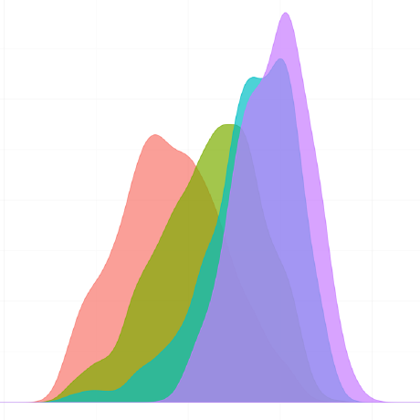

CESGA_USER = username of the CESGA account.CESGA_MAIL = email associated to the CESGA account.CESGA_PASS = password of the CESGA account.Before connecting to the CESGA server, we must set up a VPN tunnel.
We will download Forticlient, which is the default VPN provider for connecting to CESGA.
Forticlient has a free version with binaries for Linux, Windows, OSX, Android, and iOS.
gateway.cesga.esgateway.cesga.es443CESGA_MAILCESGA_PASSJust type into any Unix terminal:
ssh CESGA_USER@ft2.cesga.es
This lands us in the main Finisterrae server, into our $HOME directory.
To load an R module (the R application) from the kernel, we must run compute (to allocate memory) and then load the module.
compute command type:compute --helpmodule spider Rmodule spider R/3.3.0module load intel/2016module load R/3.3.0The following bash command creates a shell script in our $HOME directory with all the needed commands (above) to start an interactive session (for any R version):
printf '%s\n' '#!bin/bash' '# load desired R module in Ft2' '# compute # need to type this separately' 'module spider R/' 'echo "Type the desired R version, up to three digits separated by points, and press [ENTER]:"' 'read rversion' 'module load intel/2016' 'module load R/$rversion' > .loadr.shsource .loadr.shRJust type into any Unix terminal:
ssh CESGA_USER@svg.cesga.es
This lands us in the main SVG server, into our $HOME directory.
To load an R module (the R application) from the kernel, we must run compute (to allocate memory) and then load the module.
compute command type:compute --helpmodule av Rmodule load R/3.3.0The following bash command creates a shell script in our $HOME directory with all the needed commands (above) to start an interactive session (for R version 3.3.0):
printf '%s\n' '#!bin/bash' '# load desired R module in SVG' '# compute # not needed' 'module av R/' 'echo "Type the desired R version, up to three digits separated by points, and press [ENTER]:"' 'read rversion' 'module load R/$rversion' > .loadr.shsource .loadr.shRIn our home directory, if we type:
ls -a
We will likely see a file called .bashrc. This file sets bash options for our user account.
To install our needed R libraries for our own session, we must set an environment variable for them in .bashrc:
.bashrc (that is, $HOME)..bashrc by typing into the terminal:echo "export R_LIBS_USER=$HOME/R/libraries/3.3" >> .bashrc.bashrc typing:source .bashrcImportant notice:
If you want to load a different R version than 3.3 -specially if the first digit changes- , be careful to change that version number in the .bashrc script before installing new packages.
Otherwise you would find yourself with incompatibilities between packages and R versions.
You will have to change this everytime you want to load a different R version than the one specified in .bashrc.
Now, we can load R typing:
source .loadr.sh
R